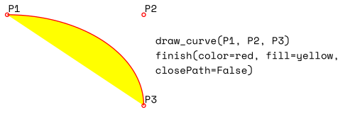

Shape¶
This class allows creating interconnected graphical elements on a PDF page. Its methods have the same meaning and name as the corresponding Page methods.
In fact, each Page draw method is just a convenience wrapper for (1) one shape draw method, (2) the Shape.finish() method, and (3) the Shape.commit() method. For page text insertion, only the Shape.commit() method is invoked. If many draw and text operations are executed for a page, you should always consider using a Shape object.
Several draw methods can be executed in a row and each one of them will contribute to one drawing. Once the drawing is complete, the Shape.finish() method must be invoked to apply color, dashing, width, morphing and other attributes.
Draw methods of this class (and Shape.insert_textbox()) are logging the area they are covering in a rectangle (Shape.rect). This property can for instance be used to set Page.cropbox_position.
Text insertions Shape.insert_text() and Shape.insert_textbox() implicitly execute a “finish” and therefore only require Shape.commit() to become effective. As a consequence, both include parameters for controlling properties like colors, etc.
Method / Attribute |
Description |
|---|---|
update the page’s contents |
|
draw a cubic Bezier curve |
|
draw a circle around a point |
|
draw a cubic Bezier using one helper point |
|
draw a line |
|
draw an ellipse |
|
connect a sequence of points |
|
draw a quadrilateral |
|
draw a rectangle |
|
draw a circular sector or piece of pie |
|
draw a squiggly line |
|
draw a zigzag line |
|
finish a set of draw commands |
|
insert text lines |
|
fit text into a rectangle |
|
stores the page’s document |
|
draw commands since last |
|
stores the page’s height |
|
stores the current point |
|
stores the owning page |
|
rectangle surrounding drawings |
|
accumulated text insertions |
|
accumulated string to be stored in |
|
stores the page’s width |
Class API
- class Shape¶
- __init__(self, page)¶
Create a new drawing. During importing PyMuPDF, the pymupdf.Page object is being given the convenience method new_shape() to construct a Shape object. During instantiation, a check will be made whether we do have a PDF page. An exception is otherwise raised.
- Parameters:
page (Page) – an existing page of a PDF document.
- draw_line(p1, p2)¶
Draw a line from
point_likeobjects p1 to p2.- Parameters:
p1 (point_like) – starting point
p2 (point_like) – end point
- Return type:
- Returns:
the end point, p2.
- draw_squiggle(p1, p2, breadth=2)¶
Draw a squiggly (wavy, undulated) line from
point_likeobjects p1 to p2. An integer number of full wave periods will always be drawn, one period having a length of 4 * breadth. The breadth parameter will be adjusted as necessary to meet this condition. The drawn line will always turn “left” when leaving p1 and always join p2 from the “right”.- Parameters:
p1 (point_like) – starting point
p2 (point_like) – end point
breadth (float) – the amplitude of each wave. The condition 2 * breadth < abs(p2 - p1) must be true to fit in at least one wave. See the following picture, which shows two points connected by one full period.
- Return type:
- Returns:
the end point, p2.
Here is an example of three connected lines, forming a closed, filled triangle. Little arrows indicate the stroking direction.
>>> import pymupdf >>> doc=pymupdf.open() >>> page=doc.new_page() >>> r = pymupdf.Rect(100, 100, 300, 200) >>> shape=page.new_shape() >>> shape.draw_squiggle(r.tl, r.tr) >>> shape.draw_squiggle(r.tr, r.br) >>> shape.draw_squiggle(r.br, r.tl) >>> shape.finish(color=(0, 0, 1), fill=(1, 1, 0)) >>> shape.commit() >>> doc.save("x.pdf")
Note
Waves drawn are not trigonometric (sine / cosine). If you need that, have a look at draw.py.
- draw_zigzag(p1, p2, breadth=2)¶
Draw a zigzag line from
point_likeobjects p1 to p2. Otherwise works exactly likeShape.draw_squiggle().- Parameters:
p1 (point_like) – starting point
p2 (point_like) – end point
breadth (float) – the amplitude of the movement. The condition 2 * breadth < abs(p2 - p1) must be true to fit in at least one period.
- Return type:
- Returns:
the end point, p2.
- draw_polyline(points)¶
Draw several connected lines between points contained in the sequence points. This can be used for creating arbitrary polygons by setting the last item equal to the first one.
- Parameters:
points (sequence) – a sequence of
point_likeobjects. Its length must at least be 2 (in which case it is equivalent to draw_line()).- Return type:
- Returns:
points[-1] – the last point in the argument sequence.
- draw_bezier(p1, p2, p3, p4)¶
Draw a standard cubic Bézier curve from p1 to p4, using p2 and p3 as control points.
All arguments are
point_likeobjects.- Return type:
- Returns:
the end point, p4.
Note
The points do not need to be different – experiment a bit with some of them being equal!
Example:

- draw_oval(tetra)¶
Draw an “ellipse” inside the given tetragon (quadrilateral). If it is a square, a regular circle is drawn, a general rectangle will result in an ellipse. If a quadrilateral is used instead, a plethora of shapes can be the result.
The drawing starts and ends at the middle point of the line
bottom-left -> top-leftcorners in an anti-clockwise movement.- Parameters:
tetra (rect_like,quad_like) –
Changed in version 1.14.5: Quads are now also supported.
- Return type:
- Returns:
the middle point of line
rect.bl -> rect.tl, or resp.quad.ll -> quad.ul. Look at just a few examples here, or at the quad-show?.py scripts in the PyMuPDF-Utilities repository.

- draw_circle(center, radius)¶
Draw a circle given its center and radius. The drawing starts and ends at point
center - (radius, 0)in an anti-clockwise movement. This point is the middle of the enclosing square’s left side.This is a shortcut for
draw_sector(center, start, 360, fullSector=False). To draw the same circle in a clockwise movement, use-360as degrees.- Parameters:
center (point_like) – the center of the circle.
radius (float) – the radius of the circle. Must be positive.
- Return type:
- Returns:
Point(center.x - radius, center.y).
- draw_curve(p1, p2, p3)¶
A special case of draw_bezier(): Draw a cubic Bezier curve from p1 to p3. On each of the two lines
p1 -> p2andp3 -> p2one control point is generated. Both control points will therefore be on the same side of the linep1 -> p3. This guaranties that the curve’s curvature does not change its sign. If the lines to p2 intersect with an angle of 90 degrees, then the resulting curve is a quarter ellipse (resp. quarter circle, if of same length).All arguments are
point_like.- Return type:
- Returns:
the end point, p3. The following is a filled quarter ellipse segment. The yellow area is oriented clockwise:

- draw_sector(center, point, angle, fullSector=True)¶
Draw a circular sector, optionally connecting the arc to the circle’s center (like a piece of pie).
- Parameters:
center (point_like) – the center of the circle.
point (point_like) – one of the two end points of the pie’s arc segment. The other one is calculated from the angle.
angle (float) – the angle of the sector in degrees. Used to calculate the other end point of the arc. Depending on its sign, the arc is drawn anti-clockwise (positive) or clockwise.
fullSector (bool) – whether to draw connecting lines from the ends of the arc to the circle center. If a fill color is specified, the full “pie” is colored, otherwise just the sector.
- Return type:
- Returns:
the other end point of the arc. Can be used as starting point for a following invocation to create logically connected pies charts. Examples:

- draw_rect(rect, *, radius=None)¶
Changed in v1.22.0: Added parameter radius.
Draw a rectangle. The drawing starts and ends at the top-left corner in an anti-clockwise movement.
- Parameters:
rect (rect_like) – where to put the rectangle on the page.
radius (multiple) – draw rounded rectangle corners. If not
None, specifies the radius of the curvature as a percentage of a rectangle side length. This must one or (a tuple of) two floats0 < radius <= 0.5, where 0.5 corresponds to 50% of the respective side. If a float, the radius of the curvature is computed asradius * min(width, height), drawing the corner’s perimeter as a quarter circle. If a tuple(rx, ry)is given, then the curvature is asymmetric with respect to the horizontal and vertical directions. A value ofradius=(0.5, 0.5)draws an ellipse.
- Return type:
- Returns:
top-left corner of the rectangle.
- draw_quad(quad)¶
Draw a quadrilateral. The drawing starts and ends at the top-left corner (
Quad.ul) in an anti-clockwise movement. It is a shortcut ofShape.draw_polyline()with the argument(ul, ll, lr, ur, ul).
- finish(width=1, color=(0,), fill=None, lineCap=0, lineJoin=0, dashes=None, closePath=True, even_odd=False, morph=(fixpoint, matrix), stroke_opacity=1, fill_opacity=1, oc=0)¶
Finish a set of draw*() methods by applying Common Parameters to all of them.
It has no effect on
Shape.insert_text()andShape.insert_textbox().The method also supports morphing the compound drawing using Point fixpoint and Matrix matrix.
- Parameters:
morph (sequence) – morph the text or the compound drawing around some arbitrary Point fixpoint by applying Matrix matrix to it. This implies that fixpoint is a fixed point of this operation: it will not change its position. Default is no morphing (None). The matrix can contain any values in its first 4 components, matrix.e == matrix.f == 0 must be true, however. This means that any combination of scaling, shearing, rotating, flipping, etc. is possible, but translations are not.
stroke_opacity (float) – (new in v1.18.1) set transparency for stroke colors. Value < 0 or > 1 will be ignored. Default is 1 (intransparent).
fill_opacity (float) – (new in v1.18.1) set transparency for fill colors. Default is 1 (intransparent).
even_odd (bool) – request the “even-odd rule” for filling operations. Default is False, so that the “nonzero winding number rule” is used. These rules are alternative methods to apply the fill color where areas overlap. Only with fairly complex shapes a different behavior is to be expected with these rules. For an in-depth explanation, see Adobe PDF References, pp. 137 ff. Here is an example to demonstrate the difference.
oc (int) – (new in v1.18.4) the
xrefnumber of anOCGorOCMDto make this drawing conditionally displayable.
Note
For each pixel in a shape, the following will happen:
Rule “even-odd” counts, how many areas contain the pixel. If this count is odd, the pixel is regarded inside the shape, if it is even, the pixel is outside.
The default rule “nonzero winding” in addition looks at the “orientation” of each area containing the pixel: it adds 1 if an area is drawn anti-clockwise and it subtracts 1 for clockwise areas. If the result is zero, the pixel is regarded outside, pixels with a non-zero count are inside the shape.
Of the four shapes in above image, the top two each show three circles drawn in standard manner (anti-clockwise, look at the arrows). The lower two shapes contain one (the top-left) circle drawn clockwise. As can be seen, area orientation is irrelevant for the right column (even-odd rule).
- insert_text(point, text, *, fontsize=11, fontname='helv', fontfile=None, set_simple=False, encoding=TEXT_ENCODING_LATIN, color=None, lineheight=None, fill=None, render_mode=0, miter_limit=1, border_width=1, rotate=0, morph=None, stroke_opacity=1, fill_opacity=1, oc=0)¶
Insert text lines starting at
point.- Parameters:
point (point_like) –
the bottom-left position of the first character of text in pixels. It is important to understand, how this works in conjunction with the rotate parameter. Please have a look at the following picture. The small red dots indicate the positions of point in each of the four possible cases.
text (str/sequence) – the text to be inserted. May be specified as either a string type or as a sequence type. For sequences, or strings containing line breaks
\n, several lines will be inserted. No care will be taken if lines are too wide, but the number of inserted lines will be limited by “vertical” space on the page (in the sense of reading direction as established by the rotate parameter). Any rest of text is discarded – the return code however contains the number of inserted lines.lineheight (float) – a factor to override the line height calculated from font properties. If not
None, a line height offontsize * lineheightwill be used.stroke_opacity (float) – (new in v1.18.1) set transparency for stroke colors (the border line of a character). Only
0 <= value <= 1will be considered. Default is 1 (intransparent).fill_opacity (float) – (new in v1.18.1) set transparency for fill colors. Default is 1 (intransparent). Use this value to control transparency of the text color. Stroke opacity only affects the border line of characters.
rotate (int) – determines whether to rotate the text. Acceptable values are multiples of 90 degrees. Default is 0 (no rotation), meaning horizontal text lines oriented from left to right. 180 means text is shown upside down from right to left. 90 means anti-clockwise rotation, text running upwards. 270 (or -90) means clockwise rotation, text running downwards. In any case, point specifies the bottom-left coordinates of the first character’s rectangle. Multiple lines, if present, always follow the reading direction established by this parameter. So line 2 is located above line 1 in case of
rotate = 180, etc.oc (int) – (new in v1.18.4) the
xrefnumber of anOCGorOCMDto make this text conditionally displayable.
- Return type:
int
- Returns:
number of lines inserted.
For a description of the other parameters see Common Parameters.
- insert_textbox(rect, buffer, *, fontsize=11, fontname='helv', fontfile=None, set_simple=False, encoding=TEXT_ENCODING_LATIN, color=None, fill=None, render_mode=0, miter_limit=1, border_width=1, expandtabs=8, align=TEXT_ALIGN_LEFT, rotate=0, lineheight=None, morph=None, stroke_opacity=1, fill_opacity=1, oc=0)¶
PDF only: Insert text into the specified rectangle. The text will be split into lines and words and then filled into the available space, starting from one of the four rectangle corners, which depends on
rotate. Line feeds and multiple space will be respected.- Parameters:
rect (rect_like) – the area to use. It must be finite and not empty.
buffer (str/sequence) – the text to be inserted. Must be specified as a string or a sequence of strings. Line breaks are respected also when occurring in a sequence entry.
align (int) – align each text line. Default is 0 (left). Centered, right and justified are the other supported options, see Text Alignment. Please note that the effect of parameter value TEXT_ALIGN_JUSTIFY is only achievable with “simple” (single-byte) fonts (including the PDF Base 14 Fonts).
lineheight (float) –
a factor to override the line height calculated from font properties. If not
None, a line height offontsize * lineheightwill be used.- arg int expandtabs:
controls handling of tab characters
\tusing thestring.expandtabs()method per each line.
stroke_opacity (float) – (new in v1.18.1) set transparency for stroke colors. Negative values and values > 1 will be ignored. Default is 1 (intransparent).
fill_opacity (float) – (new in v1.18.1) set transparency for fill colors. Default is 1 (intransparent). Use this value to control transparency of the text color. Stroke opacity only affects the border line of characters.
rotate (int) – requests text to be rotated in the rectangle. This value must be a multiple of 90 degrees. Default is 0 (no rotation). Effectively, the four values
0,90,180and270(=-90) are processed, each causing the text to start in a different rectangle corner. Bottom-left is90, bottom-right is180, and-90 / 270is top-right. See the example how text is filled in a rectangle. This argument takes precedence over morphing. See the second example, which shows text first rotated left by90degrees and then the whole rectangle rotated clockwise around is lower left corner.oc (int) – (new in v1.18.4) the
xrefnumber of anOCGorOCMDto make this text conditionally displayable.
- Return type:
float
- Returns:
If positive or zero: successful execution. The value returned is the unused rectangle line space in pixels. This may safely be ignored – or be used to optimize the rectangle, position subsequent items, etc.
If negative: no execution. The value returned is the space deficit to store text lines. Enlarge rectangle, decrease fontsize, decrease text amount, etc.


For a description of the other parameters see Common Parameters.
- commit(overlay=True)¶
Update the page’s
contentswith the accumulated drawings, followed by any text insertions. If text overlaps drawings, it will be written on top of the drawings.Warning
Do not forget to execute this method:
If a shape is not committed, it will be ignored and the page will not be changed!
The method will reset attributes
Shape.rect,lastPoint,draw_cont,text_contandtotalcont. Afterwards, the shape object can be reused for the same page.- Parameters:
overlay (bool) – determine whether to put content in foreground (default) or background. Relevant only, if the page already has a non-empty
contentsobject.
———- Attributes ———-
- height¶
Copy of the page’s height
- Type:
float
- width¶
Copy of the page’s width.
- Type:
float
- draw_cont¶
Accumulated command buffer for draw methods since last finish. Every finish method will append its commands to
Shape.totalcont.- Type:
str
- text_cont¶
Accumulated text buffer. All text insertions go here. This buffer will be appended to
totalcontShape.commit(), so that text will never be covered by drawings in the same Shape.- Type:
str
- rect¶
Rectangle surrounding drawings. This attribute is at your disposal and may be changed at any time. Its value is set to None when a shape is created or committed. Every draw* method, and
Shape.insert_textbox()update this property (i.e. enlarge the rectangle as needed). Morphing operations, however (Shape.finish(),Shape.insert_textbox()) are ignored.A typical use of this attribute would be setting
Page.cropbox_positionto this value, when you are creating shapes for later or external use. If you have not manipulated the attribute yourself, it should reflect a rectangle that contains all drawings so far.If you have used morphing and need a rectangle containing the morphed objects, use the following code:
>>> # assuming ... >>> morph = (point, matrix) >>> # ... recalculate the shape rectangle like so: >>> shape.rect = (shape.rect - pymupdf.Rect(point, point)) * ~matrix + pymupdf.Rect(point, point)
- Type:
- totalcont¶
Total accumulated command buffer for draws and text insertions. This will be used by
Shape.commit().- Type:
str
{kind=link}
Usage¶
A drawing object is constructed by shape = page.new_shape(). After this, as many draw, finish and text insertions methods as required may follow. Each sequence of draws must be finished before the drawing is committed. The overall coding pattern looks like this:
>>> shape = page.new_shape()
>>> shape.draw1(...)
>>> shape.draw2(...)
>>> ...
>>> shape.finish(width=..., color=..., fill=..., morph=...)
>>> shape.draw3(...)
>>> shape.draw4(...)
>>> ...
>>> shape.finish(width=..., color=..., fill=..., morph=...)
>>> ...
>>> shape.insert_text*
>>> ...
>>> shape.commit()
>>> ....
Note
Each finish() combines the preceding draws into one logical shape, giving it common colors, line width, morphing, etc. If closePath is specified, it will also connect the end point of the last draw with the starting point of the first one.
To successfully create compound graphics, let each draw method use the end point of the previous one as its starting point. In the above pseudo code, draw2 should hence use the returned Point of draw1 as its starting point. Failing to do so, would automatically start a new path and finish() may not work as expected (but it won’t complain either).
Text insertions may occur anywhere before the commit (they neither touch
Shape.draw_contnorShape.lastPoint). They are appended to Shape.totalcont directly, whereas draws will be appended by Shape.finish.Each commit takes all text insertions and shapes and places them in foreground or background on the page – thus providing a way to control graphical layers.
Only commit will update the page’s contents, the other methods are basically string manipulations.
Examples¶
Create a full circle of pieces of pie in different colors:
shape = page.new_shape() # start a new shape cols = (...) # a sequence of RGB color triples pieces = len(cols) # number of pieces to draw beta = 360. / pieces # angle of each piece of pie center = pymupdf.Point(...) # center of the pie p0 = pymupdf.Point(...) # starting point for i in range(pieces): p0 = shape.draw_sector(center, p0, beta, fullSector=True) # draw piece # now fill it but do not connect ends of the arc shape.finish(fill=cols[i], closePath=False) shape.commit() # update the page
Here is an example for 5 colors:
Create a regular n-edged polygon (fill yellow, red border). We use draw_sector() only to calculate the points on the circumference, and empty the draw command buffer again before drawing the polygon:
shape = page.new_shape() # start a new shape beta = -360.0 / n # our angle, drawn clockwise center = pymupdf.Point(...) # center of circle p0 = pymupdf.Point(...) # start here (1st edge) points = [p0] # store polygon edges for i in range(n): # calculate the edges p0 = shape.draw_sector(center, p0, beta) points.append(p0) shape.draw_cont = "" # do not draw the circle sectors shape.draw_polyline(points) # draw the polygon shape.finish(color=(1,0,0), fill=(1,1,0), closePath=False) shape.commit()
Here is the polygon for n = 7:

Common Parameters¶
fontname (str)
In general, there are three options:
Use one of the standard PDF Base 14 Fonts. In this case, fontfile must not be specified and “Helvetica” is used if this parameter is omitted, too.
Choose a font already in use by the page. Then specify its reference name prefixed with a slash “/”, see example below.
Specify a font file present on your system. In this case choose an arbitrary, but new name for this parameter (without “/” prefix).
If inserted text should re-use one of the page’s fonts, use its reference name appearing in
Page.get_fonts()like so:Suppose the font list has the item [1024, 0, ‘Type1’, ‘NimbusMonL-Bold’, ‘R366’], then specify fontname = “/R366”, fontfile = None to use font NimbusMonL-Bold.
fontfile (str)
File path of a font existing on your computer. If you specify fontfile, make sure you use a fontname not occurring in the above list. This new font will be embedded in the PDF upon doc.save(). Similar to new images, a font file will be embedded only once. A table of MD5 codes for the binary font contents is used to ensure this.
set_simple (bool)
Fonts installed from files are installed as Type0 fonts by default. If you want to use 1-byte characters only, set this to true. This setting cannot be reverted. Subsequent changes are ignored.
fontsize (float)
Font size of text, see:
fontsize.
dashes (str)
Causes lines to be drawn dashed. The general format is
"[n m] p"of (up to) 3 floats denoting pixel lengths.nis the dash length,m(optional) is the subsequent gap length, andp(the “phase” - required, even if 0!) specifies how many pixels should be skipped before the dashing starts. Ifmis omitted, it defaults ton.A continuous line (no dashes) is drawn with
"[] 0"or None or"". Examples:
Specifying
"[3 4] 0"means dashes of 3 and gaps of 4 pixels following each other.
"[3 3] 0"and"[3] 0"do the same thing.For (the rather complex) details on how to achieve sophisticated dashing effects, see Adobe PDF References, page 217.
color / fill (list, tuple)
Stroke and fill colors can be specified as tuples or list of of floats from 0 to 1. These sequences must have a length of 1 (GRAY), 3 (RGB) or 4 (CMYK). For GRAY colorspace, a single float instead of the unwieldy (float,) or [float] is also accepted. Accept (default) or use
Noneto not use the parameter.To simplify color specification, method getColor() in pymupdf.utils may be used to get predefined RGB color triples by name. It accepts a string as the name of the color and returns the corresponding triple. The method knows over 540 color names – see section Color Database.
Please note that the term color usually means “stroke” color when used in conjunction with fill color.
If letting default a color parameter to
None, then no resp. color selection command will be generated. If fill and color are bothNone, then the drawing will contain no color specification. But it will still be “stroked”, which causes PDF’s default color “black” be used by Adobe Acrobat and all other viewers.
width (float)
The stroke (“border”) width of the elements in a shape (if applicable). The default value is 1. The values width, color and fill have the following relationship / dependency:
If
fill=Noneshape elements will always be drawn with a border - even ifcolor=None(in which case black is taken) orwidth=0(in which case 1 is taken).Shapes without border can only be achieved if a fill color is specified (which may be white of course). To achieve this, specify
width=0. In this case, thecolorparameter is ignored.
stroke_opacity / fill_opacity (floats)
Both values are floats in range [0, 1]. Negative values or values > 1 will ignored (in most cases). Both set the transparency such that a value 0.5 corresponds to 50% transparency, 0 means invisible and 1 means intransparent. For e.g. a rectangle the stroke opacity applies to its border and fill opacity to its interior.
For text insertions (
Shape.insert_text()andShape.insert_textbox()), use fill_opacity for the text. At first sight this seems surprising, but it becomes obvious when you look further down torender_mode:fill_opacityapplies to the yellow andstroke_opacityapplies to the blue color.
border_width (float)
Set the border width for text insertions. New in v1.14.9. Relevant only if the render mode argument is used with a value greater zero.
render_mode (int)
New in version 1.14.9: Integer in
range(8)which controls the text appearance (Shape.insert_text()andShape.insert_textbox()). See page 246 in Adobe PDF References. New in v1.14.9. These methods now also differentiate between fill and stroke colors.
For default 0, only the text fill color is used to paint the text. For backward compatibility, using the color parameter instead also works.
For render mode 1, only the border of each glyph (i.e. text character) is drawn with a thickness as set in argument border_width. The color chosen in the color argument is taken for this, the fill parameter is ignored.
For render mode 2, the glyphs are filled and stroked, using both color parameters and the specified border width. You can use this value to simulate bold text without using another font: choose the same value for fill and color and an appropriate value for border_width.
For render mode 3, the glyphs are neither stroked nor filled: the text becomes invisible.
The following examples use border_width=0.3, together with a fontsize of 15. Stroke color is blue and fill color is some yellow.
miter_limit (float)
A float specifying the maximum acceptable value of the quotient
miter-length / line-width(“miter quotient”). Used in text output methods. This is only relevant for non-zero render mode values – then, characters are written with border lines (i.e. “stroked”).If two lines stroking some character meet at a sharp (<= 90°) angle and the line width is large enough, then “spikes” may become visible – causing an ugly appearance as shown below. For more background, see page 126 of the Adobe PDF References.
For instance, when joins meet at 90°, then the miter length is
sqrt(2) * line-width, so the miter quotient issqrt(2).If
miter_limitis exceeded, then all joins with a larger qotient will appear as beveled (“butt” appearance).The default value 1 (and any smaller value) will ensure that all joins are rendered as a butt. A value of
Nonewill use the PDF default value.Example text showing spikes (
miter_limit=None):Example text suppressing spikes (
miter_limit=1):
overlay (bool)
Causes the item to appear in foreground (default) or background.
morph (sequence)
Causes “morphing” of either a shape, created by the draw*() methods, or the text inserted by page methods insert_textbox() / insert_text(). If not None, it must be a pair (fixpoint, matrix), where fixpoint is a Point and matrix is a Matrix. The matrix can be anything except translations, i.e. matrix.e == matrix.f == 0 must be true. The point is used as a fixed point for the matrix operation. For example, if matrix is a rotation or scaling, then fixpoint is its center. Similarly, if matrix is a left-right or up-down flip, then the mirroring axis will be the vertical, respectively horizontal line going through fixpoint, etc.
Note
Several methods contain checks whether the to be inserted items will actually fit into the page (like
Shape.insert_text(), orShape.draw_rect()). For the result of a morphing operation there is however no such guaranty: this is entirely the programmer’s responsibility.
lineCap (deprecated: “roundCap”) (int)
Controls the look of line ends. The default value 0 lets each line end at exactly the given coordinate in a sharp edge. A value of 1 adds a semi-circle to the ends, whose center is the end point and whose diameter is the line width. Value 2 adds a semi-square with an edge length of line width and a center of the line end.
Changed in version 1.14.15
lineJoin (int)
New in version 1.14.15: Controls the way how line connections look like. This may be either as a sharp edge (0), a rounded join (1), or a cut-off edge (2, “butt”).
closePath (bool)
Causes the end point of a drawing to be automatically connected with the starting point (by a straight line).